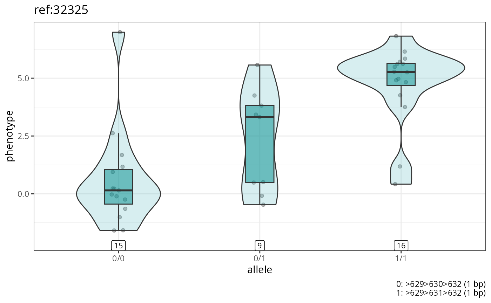
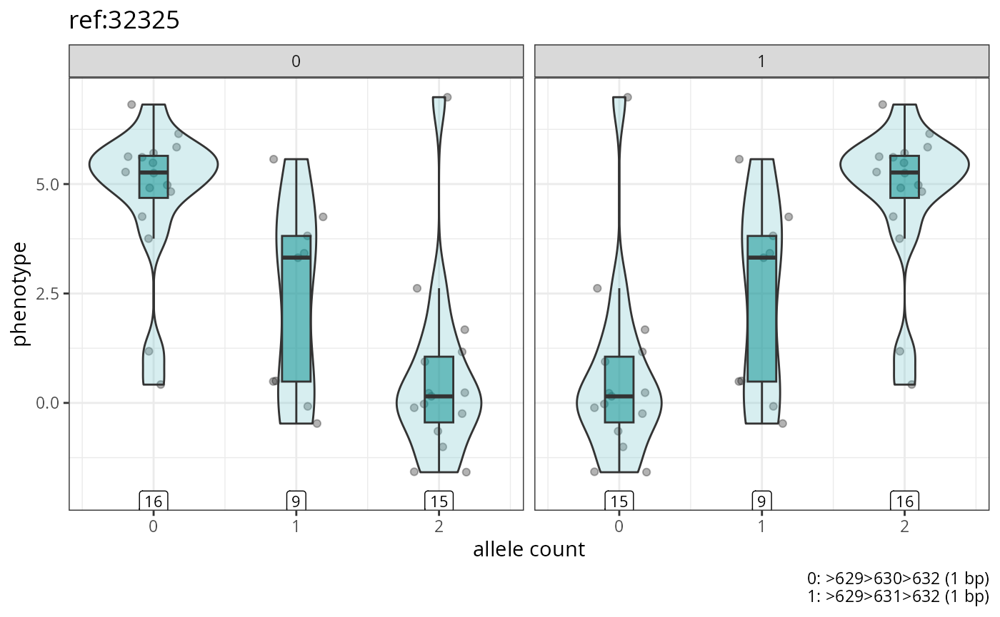
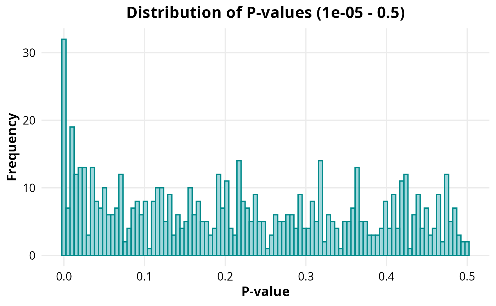
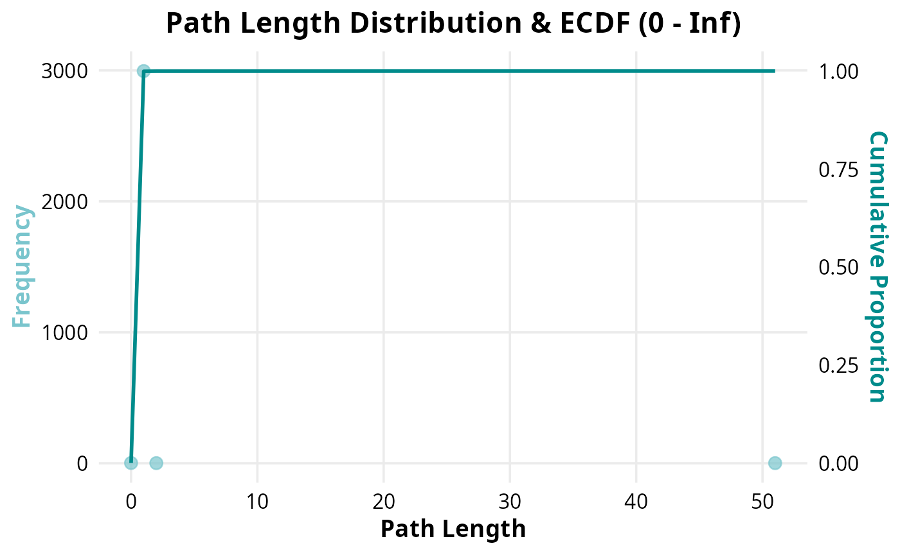
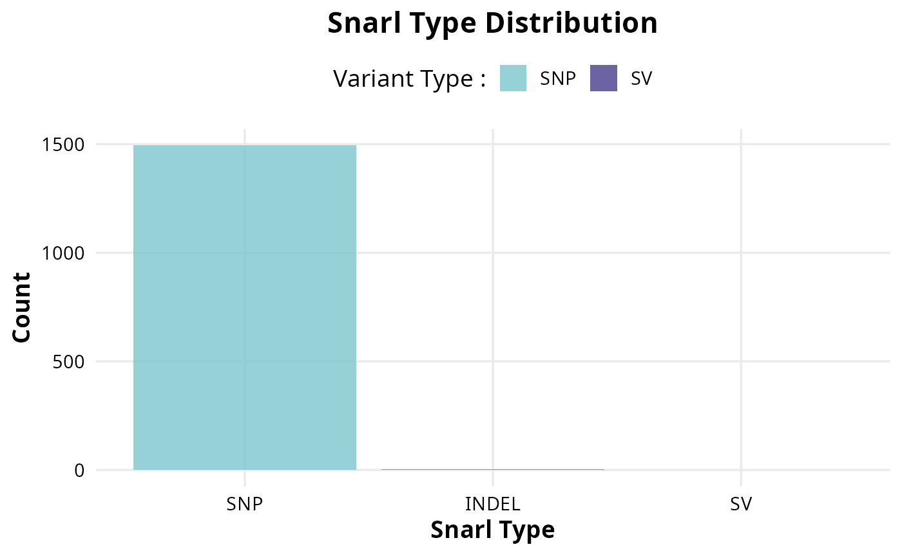

STOAT Plot overview
Jean Monlong
2026-08-19
intro.Rmd
library(StoatPlot)
library(ggplot2)
library(dplyr)
#>
#> Attaching package: 'dplyr'
#> The following objects are masked from 'package:stats':
#>
#> filter, lag
#> The following objects are masked from 'package:base':
#>
#> intersect, setdiff, setequal, union
library(knitr)Import association results
## path to association file (~stoat.assoc.pvalues.tsv.gz)
test_data_dir <- system.file('extdata', package='StoatPlot')
assoc_file = file.path(test_data_dir, 'stoat.quantitative.assoc.pvalues.tsv.gz')
## import association results
assoc = import_assoc(assoc_file)Summary
sum.l = summary_stoat(assoc)| Metric | Value |
|---|---|
| Total variants | 680 |
| Variant PV<0.01 | 31 |
| Variant adjusted PV<0.01 | 2 |
| Genomic inflation factor | 1.15 |
| Type | Total | Pv_BH_below_0.01 |
|---|---|---|
| SNP | 519 | 2 |
| SV | 161 | 0 |
Top-associated variants
| CHR | START_OFFSET | START_NODE | END_NODE | ALLELE_LENGTHS | P |
|---|---|---|---|---|---|
| ref | 32325 | >629 | <632 | 1,1 | 0.0000007 |
| ref | 16257 | >310 | <313 | 1,1 | 0.0000041 |
| ref | 68351 | >1271 | <1274 | 1,1 | 0.0000447 |
| ref | 99994 | >1815 | <1818 | 1,1 | 0.0000884 |
| ref | 53887 | >1010 | <1012 | 0,248 | 0.0000957 |
| ref | 105752 | >1896 | <1899 | 1,1 | 0.0001014 |
| ref | 39235 | >765 | <768 | 1,1 | 0.0001537 |
| ref | 13062 | >255 | <266 | 0,602 | 0.0004176 |
| ref | 105360 | >1888 | <1893 | 0,571 | 0.0004948 |
| ref | 19088 | >356 | <359 | 1,1 | 0.0005337 |
Make a plot for the top association
## prepare file names for the genotypes and phenotype
gt_fn = file.path(test_data_dir, 'snarl_genotypes.sorted.tsv.gz')
pheno_fn = file.path(test_data_dir, 'phenotype.quantitative.tsv')
## get the most associated variant
top.assoc = assoc |> arrange(P) |> head(1)
## boxplot with samples grouped by genotype
genotype_boxplots(gt_fn, pheno_fn, top.assoc)
## boxplot with samples grouped by allele
genotype_boxplots(gt_fn, pheno_fn, top.assoc, by_allele=TRUE)
Other graphs
# Histogram of p-values
plot_pvalue_hist(
file.path(test_data_dir, "gwas", "binary.assoc.chi2.tsv"),
p_column="P_CHI2",
min = 0.00001,
max = 0.5
)
# Dot plot of Path Length Frequencies
path_length_distribution(file.path(test_data_dir, "snarl_paths", "binary.snarl.tsv"))
#> Warning: Use of `freq_df$Path_Length` is discouraged.
#> ℹ Use `Path_Length` instead.
#> Warning: Use of `freq_df$Frequency` is discouraged.
#> ℹ Use `Frequency` instead.
#> Warning: Use of `ecdf_df$Cumulative_scaled` is discouraged.
#> ℹ Use `Cumulative_scaled` instead.
# Snarl type histogram
snarl_type_histogram(file.path(test_data_dir, "snarl_paths", "binary.snarl.tsv"))
#> Variant_Type Count
#> 1 INDEL 3
#> 2 SNP 1495
#> 3 SV 1